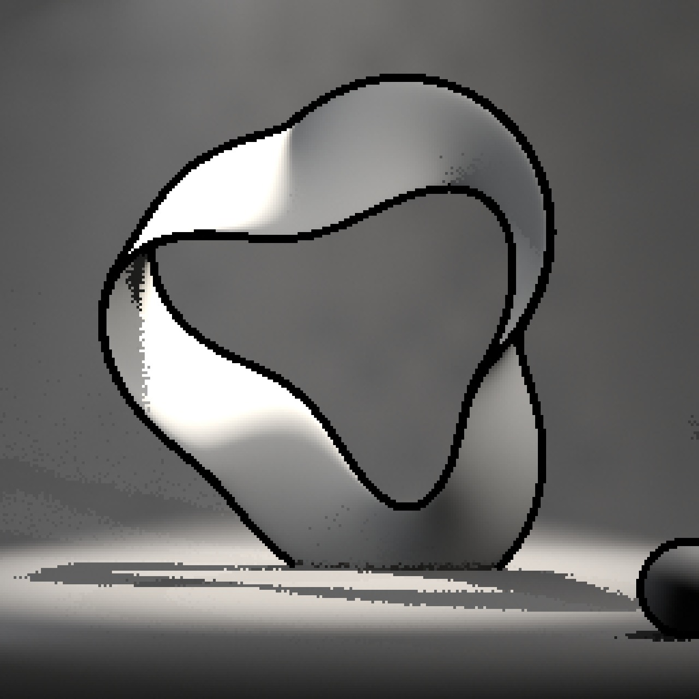
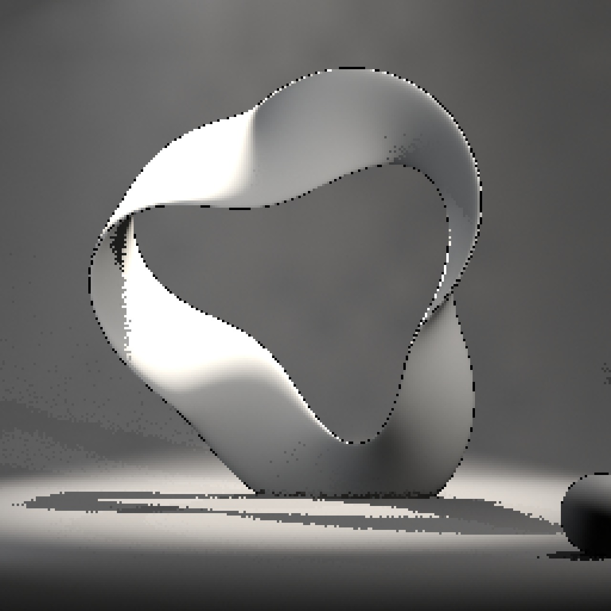

レンダースタイル
3D ビューポートのサイドバー → RenderFlow Studios タブ → レンダースタイル パネル。

プリセットの選択と適用
サムネイルをクリックすると標準プリセットと、自分で保存した ★ 付きの マイプリセット が並びます。
- アイコングリッドから使いたいスタイルをクリックします（選択中の名前がグリッドの下に表示されます）。
- ✓ 適用 を押すと、下表の項目がシーンとアクティブカメラに書き込まれます。
適用前の設定は保持されないため、必要であれば事前に .blend を保存してください。
自分の設定を保存する
適用後に変更した設定は マイプリセット から名前を付けて保存し、標準プリセットと同じグリッドから呼び出せます。
標準プリセット一覧
各プリセットの 適用前（Blender 初期設定：EEVEE・AgX・64 サンプル、解像度のみプリセットと同じ）と 適用後 の比較です。サンプルシーンには霧のボリュームと、それを横切るスポットライトの光条を入れてあり、ボリュームと影の品質設定の違いが光の帯と影の縁に現れます。低解像度のプリセットは拡大表示のため、ドットがそのまま見えます。
1980年代前半 — EEVEE / 256×256 / 15fps



平行投影・1 サンプル・FreeStyle 輪郭線・Standard。ドット絵の質感
1980年代後半 — EEVEE / 2560×2560 (10%) / 15fps



同じ絵づくりを高解像度データで持ち、10% 縮小でドット化


映画風 — Cycles / 2880×1557 / 24fps


512 サンプル・Filmic（Medium High Contrast）・被写界深度・高品質ボリューム
適用で書き換わる項目
| 分類 | 項目 |
|---|---|
| 出力 | 解像度 X / Y / %、フレームレート、ビュー変換（Standard / Filmic / AgX）と Look（コントラスト） |
| 品質 | レンダーエンジン、レンダー / ビューポートサンプル、フィルターサイズ、ソフトシャドウ（EEVEE）、ライティング（EEVEE の影のレイ数 / ステップ数 / 解像度、Cycles のバウンス数とコースティクス）、ボリューム設定 |
| ライン | FreeStyle の ON / OFF |
| カメラ | 投影方式（透視 / 平行）、クリップ開始 / 終了、被写界深度の ON / OFF、セーフエリア余白 |
カメラ関連の項目
カメラ関連はシーンのアクティブカメラ（Scene > Camera）に書き込まれます。カメラが未設定のシーンでは、カメラ項目はスキップされます。
出力・品質・ライン セクション
適用ボタンの下にある 3 つの折りたたみは、プリセット適用後の値を確認・微調整するための場所です。Blender 標準のプロパティを直接編集しているので、ここでの変更はレンダープロパティにもそのまま反映されます。
出力
- 解像度 X / Y / %
- フレームレート：FPS とベース
- ビュー変換：カラーマネジメントのビュー変換
品質
- レンダーエンジン
- サンプル：レンダー / ビューポート（Cycles は
samples/preview_samples、EEVEE は TAA サンプル） - フィルターサイズ (px)：小さいほどシャープ。レトロ系は 0.01〜0.2、映画風は 1.5
- ソフトシャドウ：EEVEE のみ表示
- ライティング（折りたたみ）：EEVEE は影のレイ数 / ステップ数 / 解像度、Cycles は最大 / ディフューズ / 光沢バウンスとコースティクス
- ボリューム（折りたたみ）：エンジンに応じて EEVEE のタイルサイズ / サンプル / 影、または Cycles のステップレート / 最大ステップ / バウンスを表示
ライン
- FreeStyle：ON にすると線幅モード（絶対値 / 相対値）と線幅が表示されます